V3-A-words 43
V3 · text-to-video · ltx-2.5 · 2 attempts · 720 credits
no reference

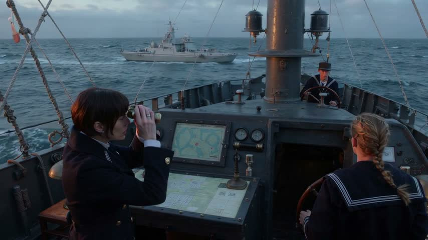
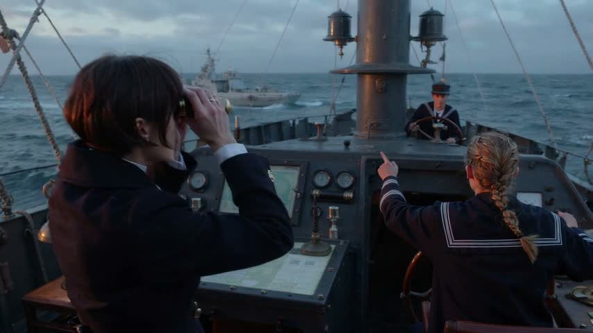


Visually coherent widescreen naval imagery maintains three consistent crew, but the open-air setting, incorrect lookout, non-amber display and incomplete command sequence substantially miss the brief.
| partly | The three crew match their descriptions and stay the same people throu… Vale has short dark hair, a dark naval coat and brass binoculars; the woman has a blond braid but no rolled sleeves. The male sailor wears a cap, with no visible curly black hair or red headset. All three appear consistent across frames. |
| partly | The bridge is narrow steel with slanted front windows, a chart table a… The steel platform and chart table remain consistent, but this is an open-air bridge without slanted front windows or cool overhead lamps. |
| partly | The lookout points at the horizon, Vale raises binoculars, then lowers… The blond woman, rather than the male lookout, points before Vale raises her binoculars. Vale briefly lowers them around 7 seconds, then raises them again and keeps observing through 13 seconds; no clear fire command is visible. |
| partly | A small tactical screen with amber graphics is visible on the bridge.… A console-mounted map display is visible, but its graphics are pale blue-green rather than amber, and vessel tracking is not clearly demonstrated. |
| partly | Cold late-afternoon window light; about 15 seconds; widescreen 16:9; n… The frames are 16:9 with cool, overcast daylight and exactly three visible crew without duplication. There are no windows, late afternoon is not established, and the sampled frames cannot independently confirm the full duration. |
heard: [0–1 s] Fire main battery! [4–5 s] Fire main battery! [9–10 s] Fire main battery!
prompt sent
Create a 15-second naval-war scene aboard Resolute, 16:9. Realistic photography, cold late-afternoon daylight, steel textures, tension, decisive pacing. Five coherent shots preserve Vale, a woman with cropped dark hair, navy double-breasted coat and brass binoculars; lookout, a young man with curly black hair, navy sailor shirt and red headset; helmsman, a woman with blond braid, navy sailor shirt and rolled sleeves; bridge, narrow steel with slanted front windows, central chart table and cool lamps; sea, slate-blue, low swells, flat horizon, thin overcast; Resolute, dark-gray dreadnought, twin-gun main turrets, red band around forward funnel; enemy cruiser, pale-gray, one raked funnel, white bow stripe; tactical screen, small, square, thick black bezel, amber graphics. 0–3 seconds: medium over-shoulder, lookout, headset visible, points out enemy cruiser through glass against sea; lateral slide. 3–6 seconds: tight profile, Vale presses both binocular eyepieces to her eyes, visibly looks through to confirm contact, window reflections across her face; slow push in. 6–9 seconds: insert close-up, tactical screen tracks cruiser: amber contact marker visibly moves across screen throughout shot, steel console surrounding it; gentle push in. 9–12 seconds: medium close-up, Vale, binoculars raised, commands fire, cool lamps behind; short push in. 12–15 seconds: wide bridge view, Vale, binoculars raised, and all crew, including lookout and helmsman, stand still beside chart table, upright bodies and planted feet visible; ease back into final hold. Sound: low engine rumble, faint hull creaks; 9–12 seconds, Vale says, "Fire main battery!" Hold the final image still for the last two seconds. Cool steel-blue shadows, restrained saturation, warm amber highlights. No subtitles, text overlays, music or gunfire.
V3-B-still 63
V3 · image-to-video from the premade still · ltx-2.5 · 2 attempts · 720 credits
reference given:

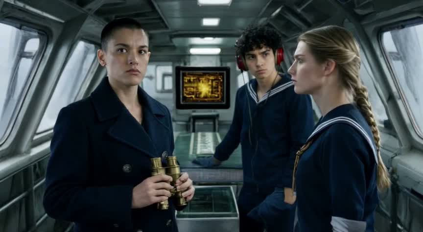

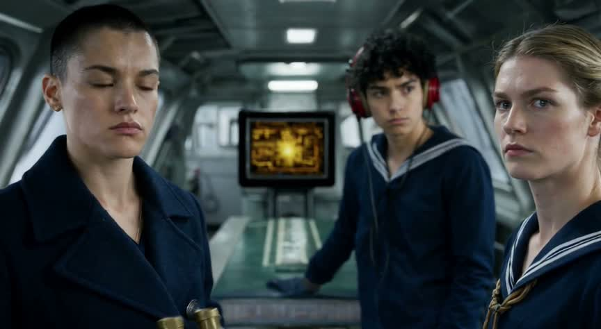
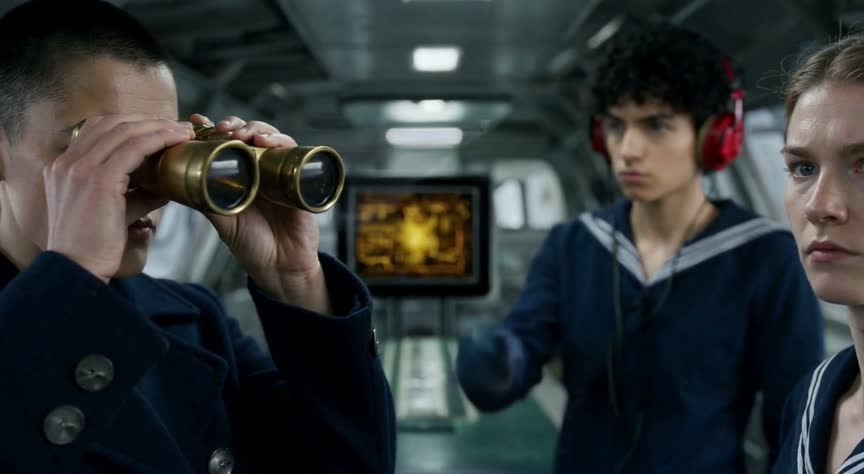


Consistent crew and a convincing steel bridge support the brief visually, but the mistimed pointing, yacht-like vessel superimposed inside the bridge, and unconfirmed fire command undermine the central story.
| yes | The three crew match their descriptions and stay the same people throu… Vale has cropped dark hair, a navy double-breasted coat and brass binoculars; the lookout has curly black hair and a red headset; the helmsman has a blond braid and rolled sleeves, with all three remaining visually consistent. |
| yes | The bridge is narrow steel with slanted front windows, a chart table a… The same narrow steel interior, angled windows, central chart table and cool ceiling lights persist across the frames. |
| partly | The lookout points at the horizon, Vale raises binoculars, then lowers… Vale raises and later lowers the binoculars, but the lookout's pointing appears only after she has raised them; no clear fire command is established visually. The vessel appears as a floating, yacht-like overlay rather than an enemy cruiser on the horizon. |
| yes | A small tactical screen with amber graphics is visible on the bridge.… An amber tactical-style display is consistently visible behind the crew, although vessel tracking is not clearly demonstrated. |
| partly | Cold late-afternoon light through the windows; about 15 seconds, wides… The frames show cool window light, approximately 16:9 framing and exactly three distinct crew members; late-afternoon timing and the full 15-second duration cannot be confirmed from these samples. |
prompt sent
Create 15 seconds matching the source image. Preserve Vale's cropped dark hair, navy double-breasted coat and brass binoculars; the lookout's curly black hair, navy sailor shirt and red headset; the helmsman's blond braid, navy sailor shirt and rolled sleeves. Keep the narrow steel bridge, slanted front windows, central chart table and cool overhead lamps. Keep the small square tactical screen with a thick black bezel and amber graphics. One continuous medium three-shot with one very slow push inward throughout. 0–3 seconds: continue the starting poses; the lookout spots something beyond the glass, his eyes narrowing with sudden recognition; cold late-afternoon light crosses his face. 3–6 seconds: maintaining his outward eye line, the lookout points toward a pale-gray cruiser with one raked funnel and a white stripe across its bow, visible beyond the windows. 6–9 seconds: Vale confirms the contact through her binoculars, following his pointing direction with controlled concentration; the helmsman's gaze stays forward. 9–12 seconds: beside their faces, the amber display tracks the contact with a moving marker; the lookout watches Vale expectantly. 12–15 seconds: Vale delivers the command, lowering the binoculars just enough to meet the crew's eyes: “Fire main battery!” Finish the push on all three faces and hold the final two seconds. Audio: low engine vibration, restrained bridge creaks; Vale speaks firmly at 12–13 seconds. Cold steel-blue shadows, restrained saturation, warm amber glow; controlled tension becoming resolve. No music, subtitles, overlays or gunfire.
MCP-A-words 73
MCP · create video from text → create video from text · ltx-2.5 · audio on · 360 credits · 120 s
no reference
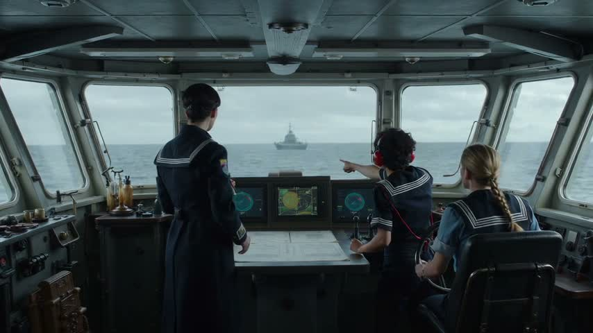
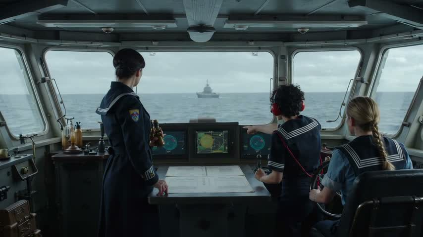
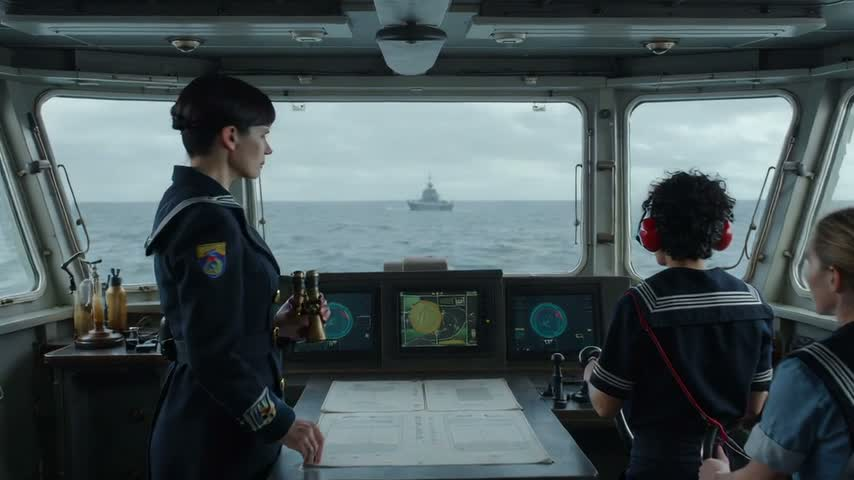
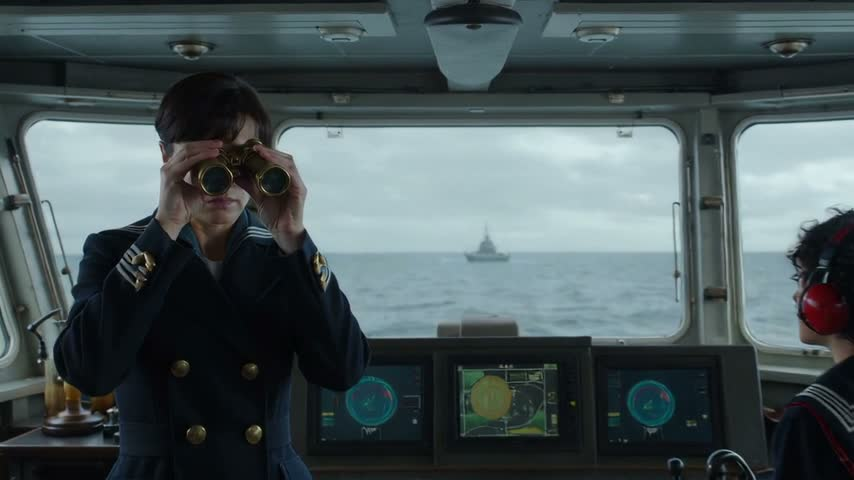
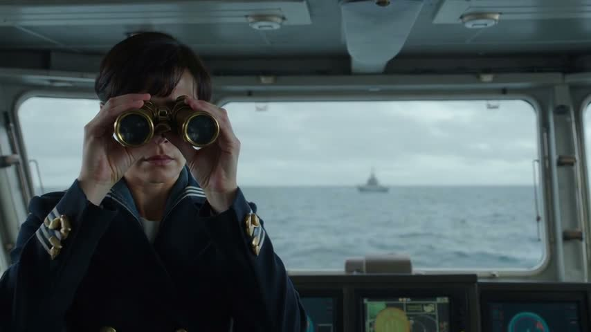
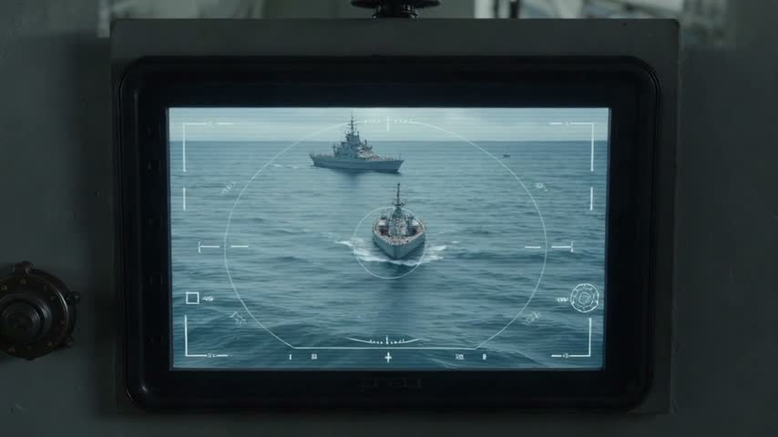
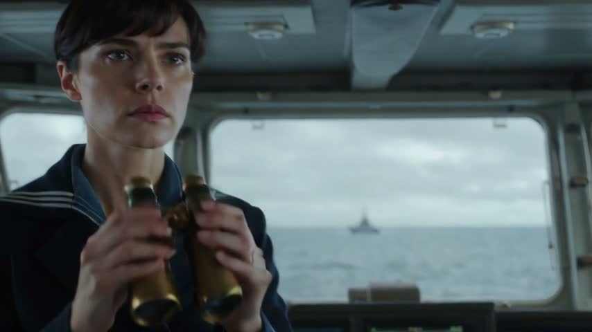
A visually polished, mostly consistent bridge sequence delivers the sighting and binocular beats, but Vale looks away from the visible cruiser, the tracking insert introduces a second vessel, and a clear fire command is not established.
| partly | The three crew match their descriptions and stay the same people throu… The three crew remain recognisable, with Vale’s navy double-breasted coat and brass binoculars, the lookout’s black curls and red headset, and the helmsman’s blond braid and rolled sleeves; Vale’s hair appears gathered at the back initially rather than consistently cropped. |
| yes | The bridge is narrow steel with slanted front windows, a chart table a… The steel ceiling, angled windows, central chart table, lamps and console layout establish a coherent, consistent bridge. |
| partly | The lookout points at the horizon, Vale raises binoculars, then lowers… Pointing precedes raised binoculars at 7–9 seconds and lowered binoculars at 13 seconds, but no clear fire command is visible. Vale also faces into the bridge while using the binoculars, with the cruiser behind her. |
| yes | A small tactical screen with amber graphics is visible on the bridge.… The central console has a small tactical display with amber-yellow graphics. However, the later targeting insert uses white graphics and shows two vessels, weakening continuity with the single horizon target. |
| partly | Cold late-afternoon light; about 15 seconds; widescreen 16:9; no extra… The frames are 16:9 with cold, overcast window light and no extra or duplicated crew. Late afternoon is not specifically established, and the supplied samples cannot independently confirm the full 15-second duration. |
prompts it wrote
[create_video_from_text · ltx-2.5] A 15-second cinematic naval battleship film scene, widescreen 16:9, realistic live-action period-inspired naval thriller. Entire scene takes place on the bridge of the battleship Resolute. Bridge geography stays consistent: narrow steel interior, slanted front windows overlooking a cold gray ocean, central chart table, cool overhead lamps, a small practical tactical tracking screen beside the windows. Three distinct adult crew members, stable faces and outfits throughout: Captain Vale is a commanding adult woman with cropped dark hair, navy double-breasted coat, holding brass binoculars; lookout is a young adult man with curly black hair, navy sailor shirt and red headset; helmsman is an adult woman with a blond braid, navy sailor shirt and rolled sleeves, stationed at the helm throughout. Restrained blue-gray cinematography, realistic sea reflections, subtle ship vibration, tense professional atmosphere. Clear sequential editing and natural human movements. 0–4 seconds: medium-wide view of the bridge, lookout sees a distant enemy cruiser silhouetted on the horizon through the front windows, points directly at it and urgently says 'Enemy cruiser on the horizon!' Captain Vale turns toward his pointing hand; helmsman holds course in background. 4–8 seconds: medium close-up of Vale raising her brass binoculars to her eyes to confirm the distant cruiser, looking out through the front windows. 8–10 seconds: short close-up insert of the small tactical screen: one moving ship blip tracked by a simple targeting bracket, restrained radar graphics, no complex text. 10–15 seconds: return to a steady medium close-up of Vale. She deliberately lowers the brass binoculars from her eyes to her chest, fixes a resolute gaze forward, and gives one sharp, clearly audible command: 'Fire!' Finish on her composed expression. Audio: low engine hum, subdued ocean wind, faint radio static, clear synchronized English dialogue, no narration, no overlapping speech. No opening title, no subtitles, no logos. This is the first clip of a continuing film: no exterior battle montage, no impacts or casualties, do not show the guns firing; end on the order. [create_video_from_text · ltx-2.5] 15-second widescreen cinematic naval thriller, photorealistic live action. On the battleship Resolute's bridge: narrow steel interior, slanted front windows overlooking a cold gray ocean, central chart table, cool overhead lamps, small tactical tracking screen. Consistent adult characters: Captain Vale, woman with cropped dark hair, navy double-breasted coat, brass binoculars. Lookout, young adult man with curly black hair, navy sailor shirt, red headset. Helmsman, woman with blond braid, navy sailor shirt, rolled sleeves, stays at helm. Blue-gray photography, sea reflections, subtle ship vibration, tense professional atmosphere. Clear sequential action, consistent geography, natural movements. 0–4s: medium-wide bridge view. Lookout spots an enemy cruiser silhouetted far away on the horizon through the front windows, points toward it and urgently says 'Enemy cruiser on the horizon!' Vale turns toward his pointing hand, helmsman holds course in background. 4–8s: medium close-up, Vale raises brass binoculars to her eyes and looks through the front windows to confirm the distant cruiser. 8–10s: close-up insert of small tactical screen, a moving vessel blip tracked by a simple targeting bracket and restrained radar graphics. 10–15s: steady medium close-up of Vale. She deliberately lowers binoculars from her eyes to her chest, gazes forward decisively, then gives a sharp, clearly audible command: 'Fire!' End on her composed face. Sound: low engine hum, faint wind and radio static, clear synchronized English dialogue without overlapping speech. No narration, titles, captions or logos. First clip of a continuing film: no battle montage, no impacts or casualties, no guns firing; end on the order.
MCP-B-still 79
MCP · create video from image · ltx-2.5 · audio on · 360 credits · 81 s
reference given:
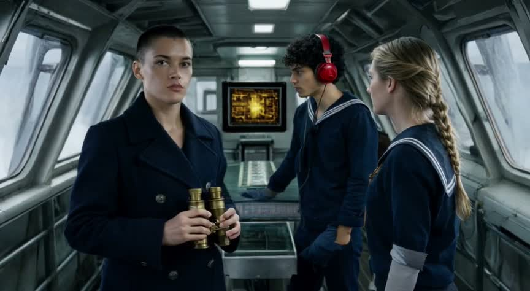
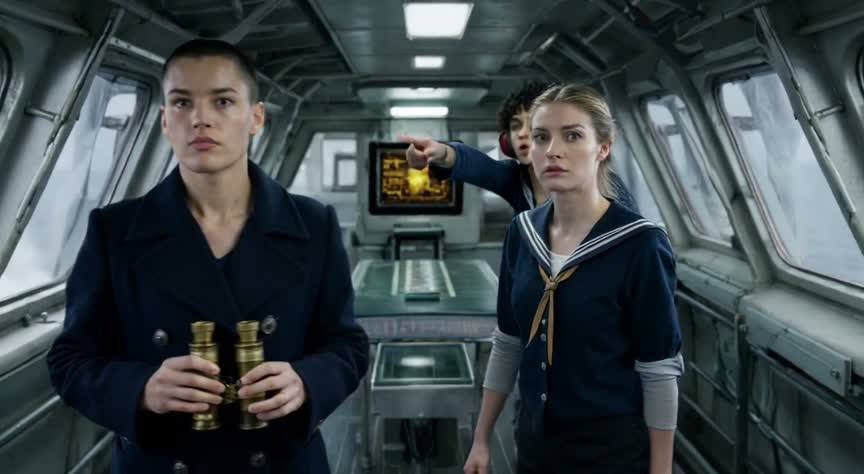
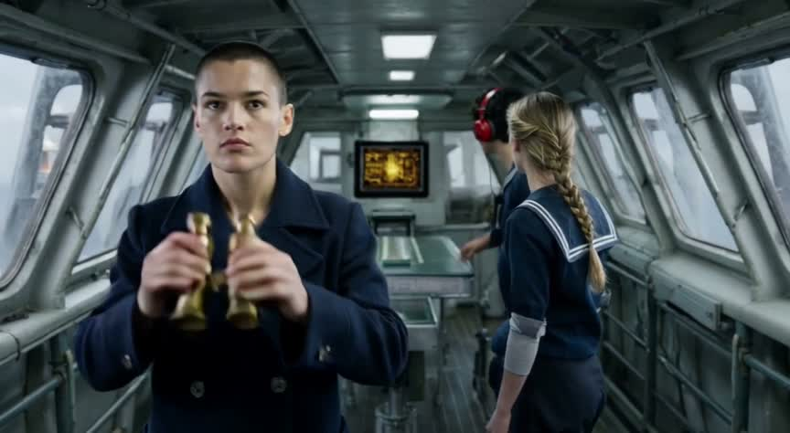
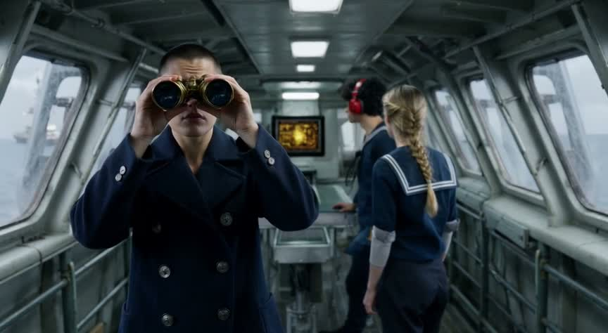
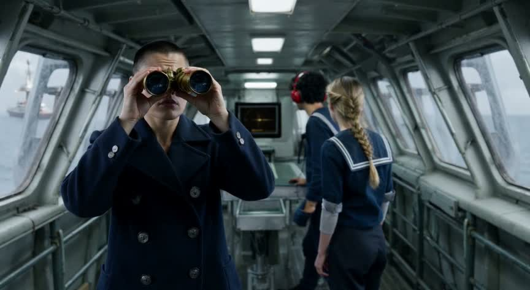
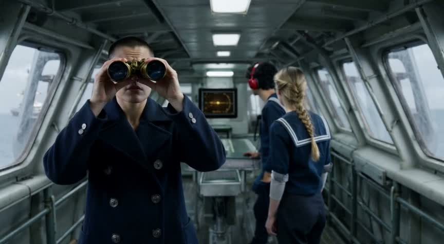
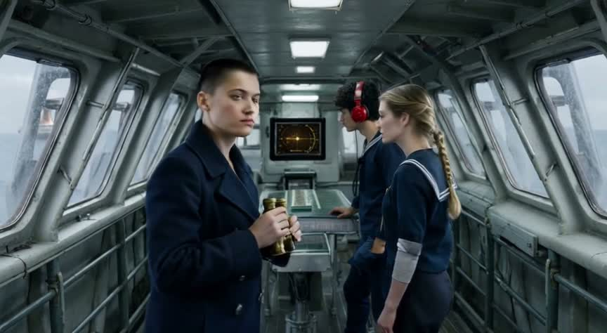
A visually coherent bridge scene with consistent crew and convincing production design, but the frames do not establish the crucial command to fire or clearly show the tactical screen tracking the enemy cruiser.
| yes | The three crew match their descriptions and stay the same people throu… Vale consistently has cropped dark hair, a navy double-breasted coat and brass binoculars; the lookout has curly black hair and a red headset; the helmsman has a blond braid and rolled sleeves. |
| yes | The bridge is narrow steel with slanted front windows, a chart table a… The narrow steel interior, angled glazing, central chart-table structure and cool ceiling lights remain spatially consistent throughout. |
| partly | The lookout points at the horizon, then Vale raises binoculars, lowers… The lookout points at 3 s, Vale raises the binoculars at 5–7 s and has lowered them by 13 s; no frame clearly establishes a command to fire. A distant vessel is visible through the left windows, but its identification as an enemy cruiser is unclear. |
| yes | A small tactical screen with amber graphics is visible on the bridge.… A small rear-mounted screen consistently displays amber graphics, eventually resembling a radar display, though vessel-specific tracking is not clearly legible. |
| partly | Cold late-afternoon window light; about 15 seconds, widescreen 16:9; n… Cold window light, widescreen framing and exactly three distinct crew are evident; the late-afternoon timing and full 15-second runtime cannot be confirmed from these samples. |
prompts it wrote
[create_video_from_image · ltx-2.5] 15-second cinematic widescreen naval film shot. Use the supplied image as the starting frame and strict visual reference for all three adult crew and the entire bridge. Preserve their exact facial appearances, hairstyles, clothing, proportions and positions throughout; no new crew, no costume changes. Captain Vale at left: cropped dark hair, navy double-breasted coat, brass binoculars. Young adult male lookout in center: curly black hair, navy sailor shirt, red headset. Female helmsman at right: blond braid, navy sailor shirt, rolled sleeves. Narrow steel bridge of the Resolute, slanted front windows, central chart table, cool overhead lamps, small amber tactical screen behind the crew. Realistic restrained acting and convincing hands. One continuous shot with a very slow camera pullback, preserve landscape composition. 0–4 seconds: the lookout notices a distant enemy cruiser through the front windows and points toward the horizon, urgently saying 'Enemy cruiser on the horizon!' 4–8 seconds: Captain Vale raises her brass binoculars from her chest to both eyes and looks through the slanted windows to confirm. The helmsman remains attentive at her station. 8–11 seconds: the existing small tactical screen updates with a simple moving vessel blip and tracking reticle, no legible text needed; the distant cruiser is a tiny silhouette on the ocean horizon through the windows. 11–15 seconds: Vale lowers the binoculars back to her chest, turns slightly toward the crew and gives the clear, firm audible command 'Fire!' Natural synchronized speech, low ship engine rumble, quiet electronic tracking beeps, ocean ambience. End on Vale's decisive expression. Do not show weapons firing or explosions; stay inside this bridge. Maintain all three identities and bridge geometry throughout, no cuts, no face morphing, no subtitles, no titles.